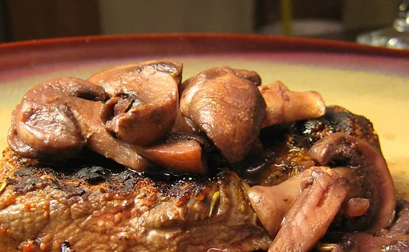

Thyme-Rubbed Steaks with Sauteed Mushrooms

TThis is an easy recipe. My family just loves the mushroom topping. Add some boiled carrots and mashed potatoes to make a wonderful meal.
Ingredients
- 2 teaspoons paprika
- 1 teaspoon salt
- 1 teaspoon ground black pepper
- ½ teaspoon garlic powder
- ½ teaspoon onion powder
- ½ teaspoon dried thyme
- 1 pound New York strip steaks, cut 3/4 inch thick
- 1 (8 ounce) package sliced fresh mushrooms
- ¼ cup minced shallot
- 2 tablespoons butter
- 2 tablespoons red wine
- 1 tablespoon vegetable oil
- salt and pepper to taste
Steps
- In a small bowl, mix together the paprika, salt, pepper, garlic powder, onion powder and thyme. Sprinkle onto each side of the steaks, pressing in so it adheres. Set aside.
- Melt the butter in a skillet over medium-high heat. Add the shallots; cook and stir for about 1 minute. Add the mushrooms, and cook for a few more minutes, until tender. Stir in the red wine, and cook until most of the liquid has evaporated. Remove from the heat and keep warm.
- Heat the oil in a separate skillet over medium-high heat. Fry steaks for 5 to 7 minutes per side, or to your desired degree of doneness. Remove to a plate and let rest for a few minutes. Top with mushrooms and serve.